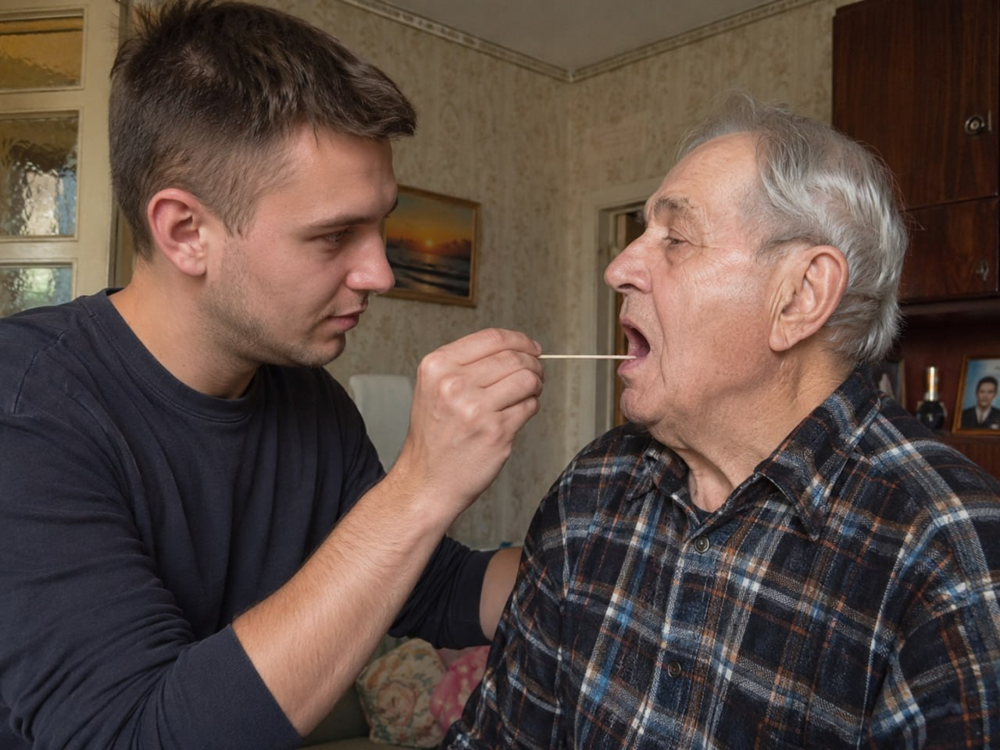
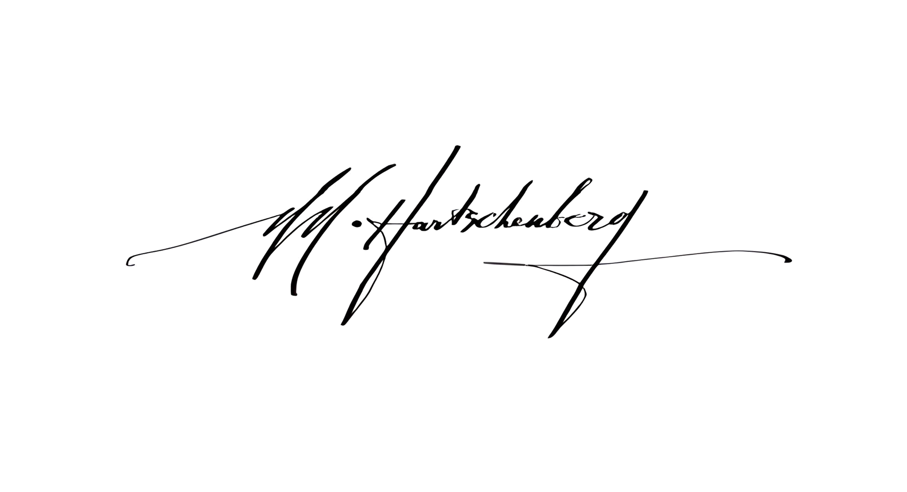

Quellen · Заметка
Сколько живых потомков моего x3 прадеда живёт в сегодняшнем дне? Какова вероятность того, что кто-то из них сдал тест ДНК?
Собственный разбор автора · Familio | Украина. Генеалогия · 14 июля 2026 · t.me/familio_ukraine/128812


Бытует мнение, что сдавать ДНК-тесты с целью решить генеалогические задачи (установить место исхода, найти утраченных в годы гражданской, второй мировой войны, депортаций, тайных усыновлений потомков своих общих предков) мало/бесполезно.
Мало/бесполезно, потому что:
«У деда была сестра, помнится, у нее сын, вряд ли он или его дети сдали тесты. Какой резон?»
«Выборка людей, сдавших ДНК, точно маленькая. Зачастую из тех, кто или очень увлечен, или у кого есть средства на такую блажь.»
«Мои предки с Украины, откуда точно не знаю. Вряд ли кто-то там в наше время сдал тесты ДНК, не до этого.»
Давайте разберемся с этими утверждениями.
Главное: чтобы понять, какая вероятность того, что аутосомальный тест ДНК покажет потомков общих с вами предков, важно понять: сколько в принципе живущих на сегодня родственников есть у вас или у вашего родителя на планете? Тест видит родственников на глубину до 5–6 поколений, значит, нужно прикинуть, сколько детей было в каждом поколении, чтобы понять, сколько потомков живёт сейчас.
Считаем по 6-поколенной схеме (ветвление по поколениям):
| Поколение | Примерные годы рождения | Детей у каждого | Численность поколения |
|---|---|---|---|
| 6-е (вглубь) | ок. 1810–1830 | 8 детей | 8 |
| 5-е | ок. 1840–1860 | по 5 | 8 × 5 = 40 |
| 4-е | ок. 1870–1890 | по 5 | 40 × 5 = 200 |
| 3-е | ок. 1900–1920 | по 3 | 200 × 3 = 600 |
| 2-е | ок. 1930–1955 | по 2 | 600 × 2 = 1200 |
| 1-е (сегодня) | ок. 1990–2000 (центр ≈1995) | по 1 | 1200 × 1 = 1200 |
Итого считаем по двум последним поколениям, условно ныне живущим: 1200 + 1200 = 2400 живущих сегодня потомков общего предка.
Дальше: вопрос тестирования. Возьмём осторожную мировую оценку: ДНК-тест на сегодня сделал примерно 1 из 1000 человек (0,1%). Для наших 2400 живущих потомков общего предка это даёт: 2400 × 0,001 = 2,4 ≈ 2 человека с тестом в среднем по миру.
Для России, Казахстана, Таджикистана и Узбекистана эта доля ещё ниже среднемировой: в 2–3 раза. Считаем оба края диапазона:
- в 2 раза ниже (1 из 2000): 2400 × 0,0005 = 1,2 человека
- в 3 раза ниже (1 из 3000): 2400 × 0,00033 ≈ 0,8 человека
Получаем около 1 человека в среднем для этих стран, уже не так уверенно, но и не ноль.
Отдельно стоят Украина и Беларусь: там ДНК-тесты активно сдают последние 6 лет, это связано с миграцией в Европу, где сделать тест доступно и по механике, и по бюджету: около 19 долларов по состоянию на июнь 2026 года, против 6990 рублей (≈80 долларов) у Генотек в России. Поэтому для украинских и белорусских линий доля протестированных родственников может быть ближе к мировой оценке, чем к заниженной региональной для России, Казахстана, Таджикистана и Узбекистана.
Расчёт верхнеуровневый, но позволяет понять: как правильно оценивать вероятность решения ваших генеалогических задач с помощью инструментов ДНК-генеалогии.
Моя мягкая рекомендация: не списывать его со счетов, но мыслить контекстом того, что это ваша инвестиция в том числе в то, чтобы быть найденными теми, кто ищет Вас с другой стороны. Оправданно сделать первый шаг.
Кейсы успешного решения генеалогических задач вы найдёте по ссылкам ниже. Желаю удачи в нахождении предков.
→ Кейсы успешного поиска методами ДНК-генеалогии
Никита Нэйтан Харченберг · 24 июля 2026
